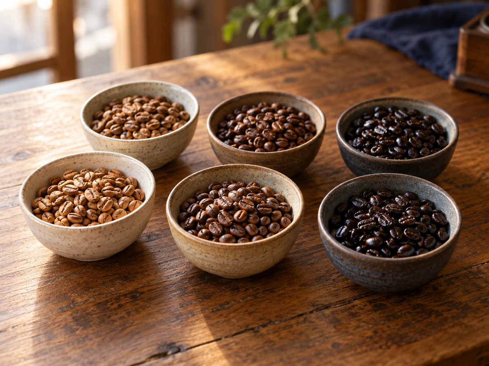

CONCEPT
ブレンドに、
力を注ぐ珈琲店
アメヤ珈琲は、男鹿市船越の観光案内所の中にある、自家焙煎の珈琲店です。 豆はスペシャルティコーヒーだけ。世界中から仕入れ、その時の豆の状態に合わせて個性を引き出すように焼いています。 ブレンドは、中深煎り、深煎りなど、焙煎の度合いに合わせて組み立てられています。
Blend
お店では、世界に一つの香味を作り出すために、ブレンドに力を注いでいると紹介されています。
お土産でアメヤ珈琲をもらった方は、こう書かれていました。
とてもフルーティーで今まで飲んだことがないコーヒー！ 公開されている来店者の感想より
一杯で「お店を調べたくなる」味をつくる、男鹿の珈琲店です。
